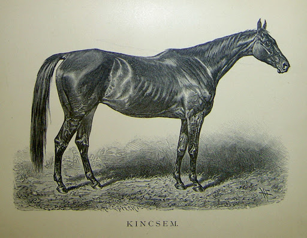
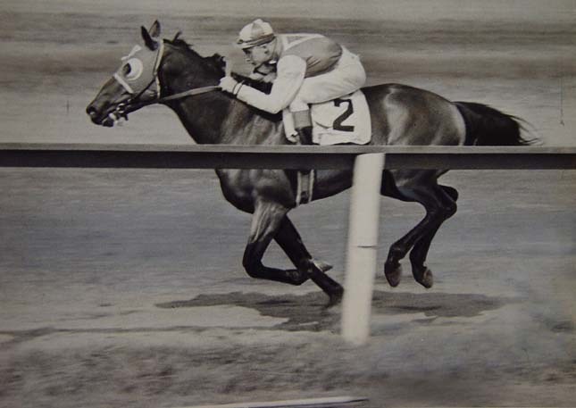

kvíz

1. Hány versenyt nyert összesen Kincsem?
54 versenyt az 54-ből
15 versenyt a 22-ből.
67 versenyt a 70-ből.
2. Mikor élt Kincsem?
1965-ben született.
1874-ben született.
1746-ban született.
3. Hol van Kincsem szobra?

Pécsen a Kincsem Parkban.
Debrecenben a Kincsem Parkban.
Budapesten a Kincsem Parkban.
4. Ki volt kincsem legjobb barátja?
Egy tarka kutya.
Egy szürke mén póni.
Egy tarka macska.
5. Miben és mikor halt meg Kincsem?
1879-ben halt meg egy versenyen elszenvedett sérülést követően.
1887-ben utolsó csikója születésekor sérült meg.
1891-ben halt meg öregség miatt.